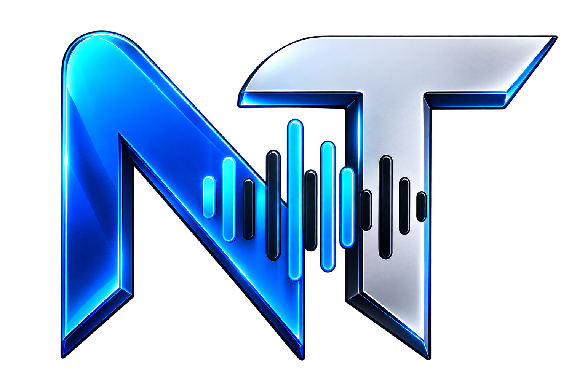

OUVE OS DOIS LADOS
Captura sua voz e o áudio do cliente durante o atendimento.

NIGGATRON SUPPORT TERMINAL // WINDOWS> ATENDIMENTO INTELIGENTE
Grave, transcreva e organize cada atendimento sem perder o foco na conversa com o cliente.
↓ BAIXAR PARA WINDOWSv0.1.0 // INSTALADOR .EXE
Captura sua voz e o áudio do cliente durante o atendimento.
Entrega título, tags e três versões de descrição.
Mantém seus atendimentos organizados no computador.